CODING AGENTS AS PIXEL WORLD MODELS
traex/GPT-6.1-Sol · 0051
点击播放 · 原生 RGB 像素
逐轮保存的候选
回放视频、检查图与代码变化。
每份候选均可单独播放。实际图片检查记录在下方工具轨迹中。
候选 01播放与检查图
点击播放 · 原生 RGB 像素

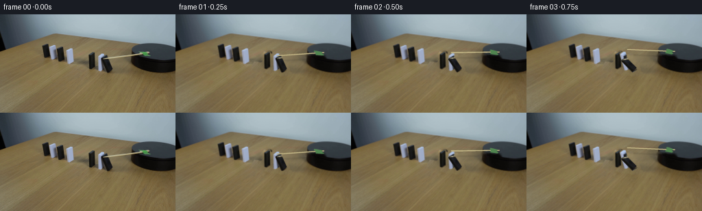
展开代码变化
--- 上一保存版本
+++ 本次保存版本
@@ -0,0 +1,173 @@
+import numpy as np
+import cv2
+from PIL import Image, ImageDraw, ImageFilter
+from pathlib import Path
+from artifact_io import save
+
+ROOT=Path(__file__).resolve().parent
+S=4
+W,H=256,144
+src=np.asarray(Image.open(ROOT/'first_frame.png').convert('RGB'))
+
+def maskpoly(points, mask=None):
+ if mask is None: mask=np.zeros((H,W),np.uint8)
+ cv2.fillPoly(mask,[np.rint(points).astype(np.int32)],255)
+ return mask
+
+# Restore just the tabletop under the three moving tiles and the radial arm.
+dommask=np.zeros((H,W),np.uint8)
+for p in [ [(127,56),(136,53),(140,55),(141,80),(133,84),(126,81)],
+ [(142,61),(148,55),(153,57),(155,82),(145,86),(141,83)],
+ [(146,60),(155,58),(166,79),(166,84),(157,88),(150,84)],
+ [(114,69),(126,70),(138,76),(154,78),(170,85),(162,90),(140,89),(122,82),(110,78)] ]:
+ maskpoly(p,dommask)
+# Continue the wood grain diagonally through the small erased footprint.
+Y,X=np.mgrid[:H,:W].astype(np.float32)
+donor=cv2.remap(src,X+17,Y+28,cv2.INTER_CUBIC,borderMode=cv2.BORDER_REFLECT101)
+# Match local low-frequency illumination without copying the tile silhouettes.
+clean=cv2.inpaint(src,dommask,7,cv2.INPAINT_TELEA)
+lowclean=cv2.GaussianBlur(clean.astype(np.float32),(0,0),10)
+lowdonor=cv2.GaussianBlur(donor.astype(np.float32),(0,0),10)
+patch=np.clip(donor.astype(float)+lowclean-lowdonor,0,255)
+a=cv2.GaussianBlur(dommask.astype(np.float32)/255,(0,0),.6)[...,None]
+bg=np.clip(src*(1-a)+patch*a,0,255).astype(np.uint8)
+rodmask=np.zeros((H,W),np.uint8)
+maskpoly([(149,63),(216,53),(222,59),(220,64),(205,64),(203,60),(151,68)],rodmask)
+# Texture-based inpainting works well on the narrow shaft and smooth disk surface.
+bg=cv2.inpaint(bg,rodmask,4,cv2.INPAINT_TELEA)
+Image.fromarray(bg).save(ROOT/'.tmp/background.png')
+
+# Orthographic camera basis inferred from the visible thickness, width and height.
+px=np.array([1.,.40]); py=np.array([.86,-.50]); pz=np.array([0.,-1.])
+view=np.array([.86,-1.,.844]); view/=np.linalg.norm(view)
+# hinge is the lower edge on the side of the next domino.
+objects=[
+ dict(B=np.array([157.,85.]), w=7., d=3., h=19.6, a0=np.deg2rad(20.9), start=0., duration=.94, end=np.deg2rad(69), white=False,
+ quads={'front':[(150,64),(156,60.5),(164,81.5),(158,85)], 'side':[(147.2,62.8),(150,64),(158,85),(155,83.7)],'top':[(147.2,62.8),(153.2,59.3),(156,60.5),(150,64)]}),
+ dict(B=np.array([145.,83.]), w=7., d=2.5, h=23., a0=0., start=.42, duration=.79, end=np.deg2rad(63), white=True,
+ quads={'front':[(145,60),(151,56.5),(151,79.5),(145,83)], 'side':[(142.5,59),(145,60),(145,83),(142.5,82)], 'top':[(142.5,59),(148.5,55.5),(151,56.5),(145,60)]}),
+ dict(B=np.array([132.5,80.5]), w=6.5, d=3., h=21., a0=0., start=.85, duration=.70, end=np.pi/2, white=False,
+ quads={'front':[(132.5,59.5),(138.1,56.25),(138.1,77.25),(132.5,80.5)], 'side':[(129.5,58.3),(132.5,59.5),(132.5,80.5),(129.5,79.3)], 'top':[(129.5,58.3),(135.1,55.05),(138.1,56.25),(132.5,59.5)]})
+]
+# Pivot conversion preserves the bottom edge of the initially tilted tile.
+for ob in objects:
+ a0=ob['a0']; ob['hinge']=ob['B']-px*ob['d']*np.cos(a0)-pz*ob['d']*np.sin(a0)
+
+texsrc=src.copy()
+# Remove the small bright sliver at the contact point from the black tile texture.
+m=np.zeros((H,W),np.uint8); cv2.line(m,(151,65),(158,64),255,1)
+texsrc=cv2.inpaint(texsrc,m,2,cv2.INPAINT_TELEA)
+texsize=(64,128)
+for ob in objects:
+ ob['textures']={}
+ for face,q in ob['quads'].items():
+ dest=np.float32([(0,0),(63,0),(63,127),(0,127)])
+ mat=cv2.getPerspectiveTransform(np.float32(q),dest)
+ ob['textures'][face]=cv2.warpPerspective(texsrc,mat,texsize,flags=cv2.INTER_CUBIC,borderMode=cv2.BORDER_REFLECT101)
+
+# The topples accelerate under gravity then settle on their neighbors.
+def angle(ob,t):
+ u=np.clip((t-ob['start'])/ob['duration'],0,1)
+ if u==0: return ob['a0']
+ # increasing angular speed under gravity, gently damped contact at the end
+ f=u*u*(2-u)
+ a=ob['a0']+(ob['end']-ob['a0'])*f
+ if u>=1:
+ tau=t-ob['start']-ob['duration']
+ a-=.025*np.exp(-tau*9)*max(0,np.sin(tau*23))
+ return a
+
+def vertices(ob,a):
+ ex=px*np.cos(a)+pz*np.sin(a)
+ ez=-px*np.sin(a)+pz*np.cos(a)
+ v={}
+ for x in [0,1]:
+ for y in [0,1]:
+ for z in [0,1]:
+ v[(x,y,z)]=ob['hinge']+ex*x*ob['d']+py*y*ob['w']+ez*z*ob['h']
+ return v
+
+faces=[('front',[(1,0,1),(1,1,1),(1,1,0),(1,0,0)]),
+ ('side',[(0,0,1),(1,0,1),(1,0,0),(0,0,0)]),
+ ('top',[(0,0,1),(0,1,1),(1,1,1),(1,0,1)]),
+ ('bottom',[(0,0,0),(0,1,0),(1,1,0),(1,0,0)])]
+
+def overlay_face(canvas,ob,face,pts,a):
+ q=np.array(pts,np.float32)*S
+ tex=ob['textures'][face if face!='bottom' else 'top'].astype(np.float32)
+ if face=='front':
+ factor=1.+(.10 if ob['white'] else .29)*np.sin(a)
+ elif face=='side': factor=1.+.08*np.sin(a)
+ elif face=='bottom': factor=.75
+ else: factor=1.
+ tex=np.clip(tex*factor,0,255).astype(np.uint8)
+ mat=cv2.getPerspectiveTransform(np.float32([(0,0),(63,0),(63,127),(0,127)]),q)
+ warp=cv2.warpPerspective(tex,mat,(W*S,H*S),flags=cv2.INTER_LINEAR,borderMode=cv2.BORDER_REPLICATE)
+ mask=np.zeros((H*S,W*S),np.uint8); cv2.fillConvexPoly(mask,np.rint(q).astype(np.int32),255,lineType=cv2.LINE_AA)
+ a2=mask[...,None].astype(float)/255
+ canvas[:]=canvas*(1-a2)+warp*a2
+
+
+def draw_arm(im,t):
+ # A radial wooden shaft taped to the turntable. Positive angle is clockwise
+ # on the horizontal plane, foreshortened by the locked camera.
+ cen=np.array([231.,55.]); k=.355
+ init=np.arctan2((65.-55.)/k,151.-231.)
+ theta=init+np.deg2rad(35)*t
+ def point(r): return cen+np.array([r*np.cos(theta),r*k*np.sin(theta)])
+ rmax=np.hypot(80,10/k)
+ p0=point(14.5); p1=point(rmax)
+ shadow=Image.new('RGBA',im.size,(0,0,0,0)); d=ImageDraw.Draw(shadow)
+ # Shadow drops onto the top of the platform; farther out onto the tabletop.
+ for j in range(70):
+ r0=14.5+(rmax-14.5)*j/70; r1=14.5+(rmax-14.5)*(j+1)/70
+ off=np.array([.8,1.3]) if r0<37 else np.array([3.0,8.0])
+ a,b=(point(r0)+off)*S,(point(r1)+off)*S
+ d.line([tuple(a),tuple(b)],fill=(13,12,9,50 if r0<37 else 27),width=2*S)
+ shadow=shadow.filter(ImageFilter.GaussianBlur(.7*S)); im.alpha_composite(shadow)
+ arm=Image.new('RGBA',im.size,(0,0,0,0));d=ImageDraw.Draw(arm)
+ v=p1-p0;n=np.array([-v[1],v[0]])/np.linalg.norm(v)
+ q=[p0+n*.78,p1+n*.78,p1-n*.78,p0-n*.78]
+ d.polygon([tuple(x*S) for x in q],fill=(170,157,109,255))
+ d.line([tuple((p0-n*.25)*S),tuple((p1-n*.25)*S)],fill=(205,193,145,255),width=1*S)
+ d.line([tuple((p0-n*.56)*S),tuple((p1-n*.56)*S)],fill=(218,204,155,255),width=2)
+ # Original tape silhouette is carried rigidly around the center of rotation.
+ tape=np.array([(202,54.8),(205.8,55),(214.1,56.1),(215,58.6),(219,59.9),(218,61.2),(207.2,60.9),(204.7,57),(201.8,56.0)])
+ coords=(tape-cen)/np.array([1,k]); delta=theta-init
+ R=np.array([[np.cos(delta),-np.sin(delta)],[np.sin(delta),np.cos(delta)]])
+ tape=(coords@R.T)*np.array([1,k])+cen
+ d.polygon([tuple(x*S) for x in tape],fill=(81,133,80,255))
+ d.line([tuple(tape[0]*S),tuple(tape[1]*S),tuple(tape[2]*S)],fill=(100,150,97,255),width=2)
+ im.alpha_composite(arm)
+
+
+def render(t):
+ canvas=cv2.resize(bg,(W*S,H*S),interpolation=cv2.INTER_CUBIC).astype(np.float64)
+ # Moving contact and soft cast shadows on the wood.
+ sh=Image.new('L',(W*S,H*S),0); d=ImageDraw.Draw(sh)
+ vs=[]
+ for ob in objects:
+ a=angle(ob,t); v=vertices(ob,a); vs.append((ob,a,v))
+ ps=[]
+ for key,p in v.items():
+ z=ob['d']*key[0]*np.sin(a)+ob['h']*key[2]*np.cos(a)
+ # Fixed broad illumination from upper left.
+ ps.append(p+np.array([-.58*z,.15*z]))
+ hull=cv2.convexHull(np.float32(ps)).reshape(-1,2)
+ d.polygon([tuple(p*S) for p in hull],fill=57)
+ sh=sh.filter(ImageFilter.GaussianBlur(1.9*S))
+ canvas*=1.-np.asarray(sh)[...,None]/255*.50
+ # Depth ordering: leftmost far tile first, near impact tile last.
+ for ob,a,v in reversed(vs):
+ normals={'front':np.array([np.cos(a),0,np.sin(a)]), 'side':np.array([0,-1.,0]), 'top':np.array([-np.sin(a),0,np.cos(a)]), 'bottom':np.array([np.sin(a),0,-np.cos(a)])}
+ for face,keys in sorted(faces,key=lambda f: {'bottom':0,'side':1,'front':2,'top':3}[f[0]]):
+ if np.dot(normals[face],view)>0.005:
+ overlay_face(canvas,ob,face,[v[k] for k in keys],a)
+ im=Image.fromarray(np.clip(canvas,0,255).astype(np.uint8)).convert('RGBA')
+ draw_arm(im,t)
+ rgb=np.asarray(im.convert('RGB'))
+ rgb=cv2.GaussianBlur(rgb,(0,0),.22*S)
+ return cv2.resize(rgb,(W,H),interpolation=cv2.INTER_AREA)
+
+frames=np.stack([src]+[render(i/4) for i in range(1,20)])
+save(frames,ROOT)
候选 02播放与检查图
点击播放 · 原生 RGB 像素

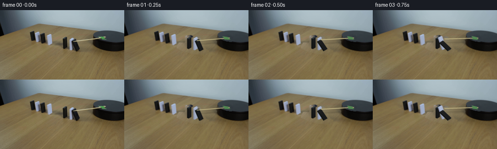
展开代码变化
--- 上一保存版本
+++ 本次保存版本
@@ -14,27 +14,41 @@
cv2.fillPoly(mask,[np.rint(points).astype(np.int32)],255)
return mask
-# Restore just the tabletop under the three moving tiles and the radial arm.
+# Remove the moving objects by continuing the original fine wood grain.
+# Pixels outside the small dynamic footprint remain those of the input photo.
+Y,X=np.mgrid[:H,:W].astype(np.float32)
dommask=np.zeros((H,W),np.uint8)
-for p in [ [(127,56),(136,53),(140,55),(141,80),(133,84),(126,81)],
- [(142,61),(148,55),(153,57),(155,82),(145,86),(141,83)],
- [(146,60),(155,58),(166,79),(166,84),(157,88),(150,84)],
- [(114,69),(126,70),(138,76),(154,78),(170,85),(162,90),(140,89),(122,82),(110,78)] ]:
+for p in [ [(126,55),(136,53),(140,55),(142,80),(136,84),(126,82)],
+ [(141,60),(148,55),(153,56),(155,81),(147,86),(141,83)],
+ [(146,60),(155,58),(166,79),(167,85),(158,88),(150,84)],
+ [(113,68),(126,68),(143,75),(158,77),(173,85),(165,91),(144,90),(122,84),(109,77)] ]:
maskpoly(p,dommask)
-# Continue the wood grain diagonally through the small erased footprint.
-Y,X=np.mgrid[:H,:W].astype(np.float32)
-donor=cv2.remap(src,X+17,Y+28,cv2.INTER_CUBIC,borderMode=cv2.BORDER_REFLECT101)
-# Match local low-frequency illumination without copying the tile silhouettes.
-clean=cv2.inpaint(src,dommask,7,cv2.INPAINT_TELEA)
-lowclean=cv2.GaussianBlur(clean.astype(np.float32),(0,0),10)
-lowdonor=cv2.GaussianBlur(donor.astype(np.float32),(0,0),10)
-patch=np.clip(donor.astype(float)+lowclean-lowdonor,0,255)
-a=cv2.GaussianBlur(dommask.astype(np.float32)/255,(0,0),.6)[...,None]
+dommask=cv2.dilate(dommask,np.ones((3,3),np.uint8))
+# Use a neighboring unoccluded stretch of the same wood surface. A linear
+# illumination fit accounts for the mild light gradient across the table.
+donor=cv2.remap(src,X+19,Y+29,cv2.INTER_CUBIC,borderMode=cv2.BORDER_REFLECT101).astype(float)
+calmask=np.zeros((H,W),np.uint8)
+maskpoly([(108,67),(150,54),(178,67),(178,95),(115,101)],calmask)
+calmask[cv2.dilate(dommask,np.ones((7,7),np.uint8))>0]=0
+cy,cx=np.where(calmask>0)
+A=np.stack([np.ones(len(cx)),(cx-145)/30,(cy-80)/30],1)
+coef=np.linalg.lstsq(A,src[cy,cx].astype(float)-donor[cy,cx],rcond=None)[0]
+shift=coef[0]+(X[...,None]-145)/30*coef[1]+(Y[...,None]-80)/30*coef[2]
+patch=np.clip(donor+shift,0,255)
+a=cv2.GaussianBlur(dommask.astype(np.float32)/255,(0,0),.55)[...,None]
bg=np.clip(src*(1-a)+patch*a,0,255).astype(np.uint8)
rodmask=np.zeros((H,W),np.uint8)
-maskpoly([(149,63),(216,53),(222,59),(220,64),(205,64),(203,60),(151,68)],rodmask)
-# Texture-based inpainting works well on the narrow shaft and smooth disk surface.
+maskpoly([(148,63),(204,55),(216,53),(222,57),(222,63),(218,64),(207,64),(201,61),(150,68)],rodmask)
+rodmask=cv2.dilate(rodmask,np.ones((3,3),np.uint8))
bg=cv2.inpaint(bg,rodmask,4,cv2.INPAINT_TELEA)
+# On the black disk, use the untouched smooth top surface at the same depth.
+# This avoids smearing a fragment of the bright shaft into the rim.
+for y in range(49,66):
+ for x in range(197,224):
+ if not rodmask[y,x]: continue
+ rr=((x-231)/40)**2+((y-55)/12.5)**2
+ if rr<.80:
+ bg[y,x]=np.clip(src[y,min(x+25,254)].astype(float)+np.array([-.6,-.5,-.5]),0,255)
Image.fromarray(bg).save(ROOT/'.tmp/background.png')
# Orthographic camera basis inferred from the visible thickness, width and height.
@@ -42,9 +56,9 @@
view=np.array([.86,-1.,.844]); view/=np.linalg.norm(view)
# hinge is the lower edge on the side of the next domino.
objects=[
- dict(B=np.array([157.,85.]), w=7., d=3., h=19.6, a0=np.deg2rad(20.9), start=0., duration=.94, end=np.deg2rad(69), white=False,
+ dict(B=np.array([157.,85.]), w=7., d=3., h=19.6, a0=np.deg2rad(20.9), start=0., duration=.94, end=np.deg2rad(73), white=False,
quads={'front':[(150,64),(156,60.5),(164,81.5),(158,85)], 'side':[(147.2,62.8),(150,64),(158,85),(155,83.7)],'top':[(147.2,62.8),(153.2,59.3),(156,60.5),(150,64)]}),
- dict(B=np.array([145.,83.]), w=7., d=2.5, h=23., a0=0., start=.42, duration=.79, end=np.deg2rad(63), white=True,
+ dict(B=np.array([145.,83.]), w=7., d=2.5, h=23., a0=0., start=.42, duration=.79, end=np.deg2rad(75), white=True,
quads={'front':[(145,60),(151,56.5),(151,79.5),(145,83)], 'side':[(142.5,59),(145,60),(145,83),(142.5,82)], 'top':[(142.5,59),(148.5,55.5),(151,56.5),(145,60)]}),
dict(B=np.array([132.5,80.5]), w=6.5, d=3., h=21., a0=0., start=.85, duration=.70, end=np.pi/2, white=False,
quads={'front':[(132.5,59.5),(138.1,56.25),(138.1,77.25),(132.5,80.5)], 'side':[(129.5,58.3),(132.5,59.5),(132.5,80.5),(129.5,79.3)], 'top':[(129.5,58.3),(135.1,55.05),(138.1,56.25),(132.5,59.5)]})
@@ -53,17 +67,19 @@
for ob in objects:
a0=ob['a0']; ob['hinge']=ob['B']-px*ob['d']*np.cos(a0)-pz*ob['d']*np.sin(a0)
-texsrc=src.copy()
-# Remove the small bright sliver at the contact point from the black tile texture.
-m=np.zeros((H,W),np.uint8); cv2.line(m,(151,65),(158,64),255,1)
-texsrc=cv2.inpaint(texsrc,m,2,cv2.INPAINT_TELEA)
+# Matte tiles with gradients sampled from the original materials. Interior
+# colors exclude the blurred boundaries so there is no wood-colored fringe.
texsize=(64,128)
+ty,tx=np.mgrid[0:128,0:64]
for ob in objects:
- ob['textures']={}
- for face,q in ob['quads'].items():
- dest=np.float32([(0,0),(63,0),(63,127),(0,127)])
- mat=cv2.getPerspectiveTransform(np.float32(q),dest)
- ob['textures'][face]=cv2.warpPerspective(texsrc,mat,texsize,flags=cv2.INTER_CUBIC,borderMode=cv2.BORDER_REFLECT101)
+ ob['textures']={}
+ if ob['white']:
+ cols={'front':np.array([163,173,197]),'side':np.array([148,157,182]),'top':np.array([176,189,209])}
+ else:
+ cols={'front':np.array([23,24,25]),'side':np.array([18,20,19]),'top':np.array([53,61,67])}
+ for face in ('front','side','top'):
+ grad=(.025*(.5-tx/63)+.09*(.5-ty/127)) if ob['white'] else (.11*(.5-tx/63)+.17*(.5-ty/127))
+ ob['textures'][face]=np.clip(cols[face][None,None,:]*(1+grad[...,None]),0,255).astype(np.uint8)
# The topples accelerate under gravity then settle on their neighbors.
def angle(ob,t):
@@ -111,19 +127,19 @@
def draw_arm(im,t):
# A radial wooden shaft taped to the turntable. Positive angle is clockwise
# on the horizontal plane, foreshortened by the locked camera.
- cen=np.array([231.,55.]); k=.355
- init=np.arctan2((65.-55.)/k,151.-231.)
- theta=init+np.deg2rad(35)*t
+ cen=np.array([212.,58.]); k=.355
+ init=np.arctan2((65.-58.)/k,151.-212.)
+ theta=init+np.deg2rad(18)*t
def point(r): return cen+np.array([r*np.cos(theta),r*k*np.sin(theta)])
- rmax=np.hypot(80,10/k)
- p0=point(14.5); p1=point(rmax)
+ rmax=np.hypot(61,7/k)
+ p0=point(-5.5); p1=point(rmax)
shadow=Image.new('RGBA',im.size,(0,0,0,0)); d=ImageDraw.Draw(shadow)
# Shadow drops onto the top of the platform; farther out onto the tabletop.
for j in range(70):
- r0=14.5+(rmax-14.5)*j/70; r1=14.5+(rmax-14.5)*(j+1)/70
- off=np.array([.8,1.3]) if r0<37 else np.array([3.0,8.0])
+ r0=-5.5+(rmax+5.5)*j/70; r1=-5.5+(rmax+5.5)*(j+1)/70
+ off=np.array([.8,1.3]) if r0<19 else np.array([3.0,8.0])
a,b=(point(r0)+off)*S,(point(r1)+off)*S
- d.line([tuple(a),tuple(b)],fill=(13,12,9,50 if r0<37 else 27),width=2*S)
+ d.line([tuple(a),tuple(b)],fill=(13,12,9,50 if r0<19 else 27),width=2*S)
shadow=shadow.filter(ImageFilter.GaussianBlur(.7*S)); im.alpha_composite(shadow)
arm=Image.new('RGBA',im.size,(0,0,0,0));d=ImageDraw.Draw(arm)
v=p1-p0;n=np.array([-v[1],v[0]])/np.linalg.norm(v)
候选 03播放与检查图
点击播放 · 原生 RGB 像素
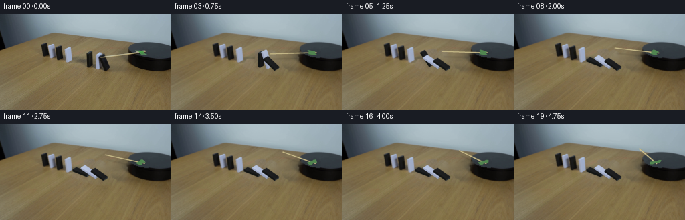
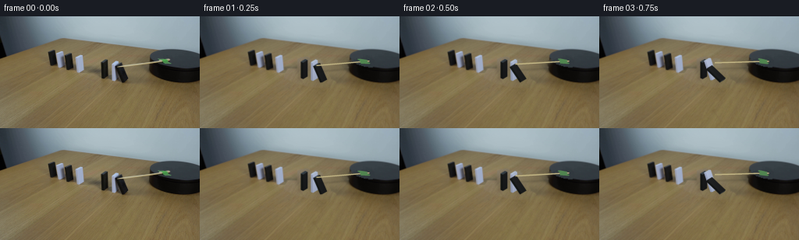
展开代码变化
--- 上一保存版本 +++ 本次保存版本 @@ -26,7 +26,7 @@ dommask=cv2.dilate(dommask,np.ones((3,3),np.uint8)) # Use a neighboring unoccluded stretch of the same wood surface. A linear # illumination fit accounts for the mild light gradient across the table. -donor=cv2.remap(src,X+19,Y+29,cv2.INTER_CUBIC,borderMode=cv2.BORDER_REFLECT101).astype(float) +donor=cv2.remap(src,X+19,Y+42,cv2.INTER_CUBIC,borderMode=cv2.BORDER_REFLECT101).astype(float) calmask=np.zeros((H,W),np.uint8) maskpoly([(108,67),(150,54),(178,67),(178,95),(115,101)],calmask) calmask[cv2.dilate(dommask,np.ones((7,7),np.uint8))>0]=0
候选 04播放与检查图
点击播放 · 原生 RGB 像素
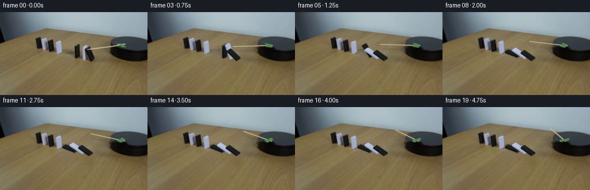
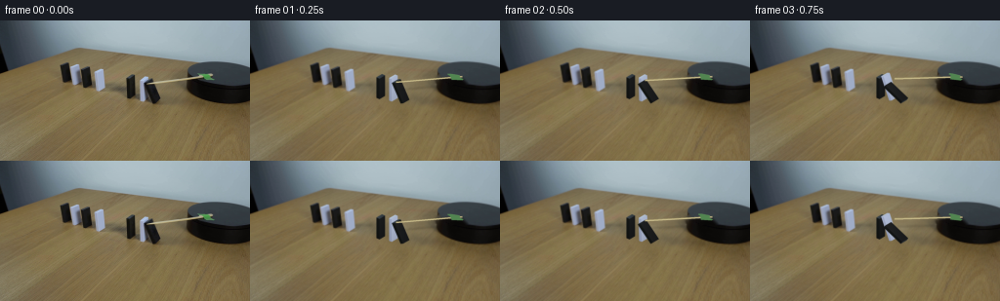
展开代码变化
--- 上一保存版本 +++ 本次保存版本 @@ -36,19 +36,14 @@ shift=coef[0]+(X[...,None]-145)/30*coef[1]+(Y[...,None]-80)/30*coef[2] patch=np.clip(donor+shift,0,255) a=cv2.GaussianBlur(dommask.astype(np.float32)/255,(0,0),.55)[...,None] +filled=cv2.inpaint(src,dommask,9,cv2.INPAINT_TELEA).astype(float) +fine=donor-cv2.GaussianBlur(donor.astype(np.float32),(0,0),2.1) +patch=cv2.GaussianBlur(filled.astype(np.float32),(0,0),1.3)+fine*.75 bg=np.clip(src*(1-a)+patch*a,0,255).astype(np.uint8) rodmask=np.zeros((H,W),np.uint8) maskpoly([(148,63),(204,55),(216,53),(222,57),(222,63),(218,64),(207,64),(201,61),(150,68)],rodmask) rodmask=cv2.dilate(rodmask,np.ones((3,3),np.uint8)) bg=cv2.inpaint(bg,rodmask,4,cv2.INPAINT_TELEA) -# On the black disk, use the untouched smooth top surface at the same depth. -# This avoids smearing a fragment of the bright shaft into the rim. -for y in range(49,66): - for x in range(197,224): - if not rodmask[y,x]: continue - rr=((x-231)/40)**2+((y-55)/12.5)**2 - if rr<.80: - bg[y,x]=np.clip(src[y,min(x+25,254)].astype(float)+np.array([-.6,-.5,-.5]),0,255) Image.fromarray(bg).save(ROOT/'.tmp/background.png') # Orthographic camera basis inferred from the visible thickness, width and height.
候选 05播放与检查图
点击播放 · 原生 RGB 像素
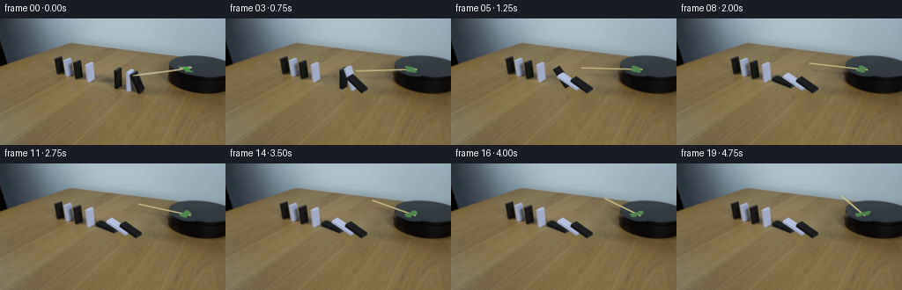
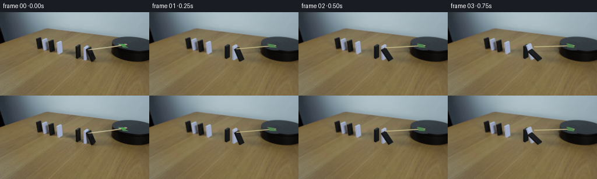
展开代码变化
--- 上一保存版本 +++ 本次保存版本 @@ -44,6 +44,13 @@ maskpoly([(148,63),(204,55),(216,53),(222,57),(222,63),(218,64),(207,64),(201,61),(150,68)],rodmask) rodmask=cv2.dilate(rodmask,np.ones((3,3),np.uint8)) bg=cv2.inpaint(bg,rodmask,4,cv2.INPAINT_TELEA) +# Fill the smooth disk top along its elliptical silhouette with a soft +# transition at the original rim, keeping the cylindrical side untouched. +rr=((X-232.)/41.)**2+((Y-55.)/13.)**2 +surface=cv2.remap(src,X+27,Y,cv2.INTER_CUBIC,borderMode=cv2.BORDER_REFLECT101) +weight=np.clip((1-rr)/.20,0,1)*cv2.GaussianBlur(rodmask.astype(float)/255,(0,0),.45) +weight[X<192]=0 +bg=np.clip(bg*(1-weight[...,None])+surface*weight[...,None],0,255).astype(np.uint8) Image.fromarray(bg).save(ROOT/'.tmp/background.png') # Orthographic camera basis inferred from the visible thickness, width and height.
可观测工具轨迹
实际执行的命令与返回图片。
命令 1exit 0
/bin/bash -lc "ls -la && cat prompt.txt && printf '\\n---RULES---\\n' && cat GENERATION_RULES.md"
命令 2exit 0
/bin/bash -lc "cat artifact_io.py && python - <<'PY'
from PIL import Image
im=Image.open('first_frame.png');im.resize((1024,576)).save('.tmp/large.png')
PY"命令 3exit 0
/bin/bash -lc "python - <<'PY'
from PIL import Image
im=Image.open('first_frame.png')
im.crop((125,35,256,100)).resize((1048,520)).save('.tmp/crop.png')
PY"命令 4exit 0
/bin/bash -lc "python - <<'PY' import importlib.util for x in ['numpy','PIL','cv2','scipy']: print(x, bool(importlib.util.find_spec(x))) PY"
命令 5exit 0
/bin/bash -lc "python - <<'PY'
from PIL import Image
im=Image.open('first_frame.png');im.crop((124,51,168,88)).resize((704,592),Image.Resampling.NEAREST).save('.tmp/domino.png')
PY"命令 6exit 0
/bin/bash -lc "python - <<'PY'
from PIL import Image,ImageDraw
im=Image.open('first_frame.png').resize((1536,864),Image.Resampling.NEAREST)
d=ImageDraw.Draw(im)
for x in range(130,166,5):
d.line((x*6,52*6,x*6,90*6),fill=(255,0,0),width=1);d.text((x*6,88*6),str(x),fill='white')
for y in range(55,86,5):
d.line((125*6,y*6,168*6,y*6),fill=(255,0,0),width=1);d.text((167*6,y*6),str(y),fill='white')
im.crop((124*6,50*6,175*6,94*6)).save('.tmp/grid.png')
PY"命令 7exit 0
/bin/bash -lc "cat > generate.py <<'PY'
import numpy as np
import cv2
from PIL import Image, ImageDraw, ImageFilter
from pathlib import Path
from artifact_io import save
ROOT=Path(__file__).resolve().parent
S=4
W,H=256,144
src=np.asarray(Image.open(ROOT/'first_frame.png').convert('RGB'))
def maskpoly(points, mask=None):
if mask is None: mask=np.zeros((H,W),np.uint8)
cv2.fillPoly(mask,[np.rint(points).astype(np.int32)],255)
return mask
# Restore just the tabletop under the three moving tiles and the radial arm.
dommask=np.zeros((H,W),np.uint8)
for p in [ [(127,56),(136,53),(140,55),(141,80),(133,84),(126,81)],
[(142,61),(148,55),(153,57),(155,82),(145,86),(141,83)],
[(146,60),(155,58),(166,79),(166,84),(157,88),(150,84)],
[(114,69),(126,70),(138,76),(154,78),(170,85),(162,90),(140,89),(122,82),(110,78)] ]:
maskpoly(p,dommask)
# Continue the wood grain diagonally through the small erased footprint.
Y,X=np.mgrid[:H,:W].astype(np.float32)
donor=cv2.remap(src,X+17,Y+28,cv2.INTER_CUBIC,borderMode=cv2.BORDER_REFLECT101)
# Match local low-frequency illumination without copying the tile silhouettes.
clean=cv2.inpaint(src,dommask,7,cv2.INPAINT_TELEA)
lowclean=cv2.GaussianBlur(clean.astype(np.float32),(0,0),10)
lowdonor=cv2.GaussianBlur(donor.astype(np.float32),(0,0),10)
patch=np.clip(donor.astype(float)+lowclean-lowdonor,0,255)
a=cv2.GaussianBlur(dommask.astype(np.float32)/255,(0,0),.6)[...,None]
bg=np.clip(src*(1-a)+patch*a,0,255).astype(np.uint8)
rodmask=np.zeros((H,W),np.uint8)
maskpoly([(149,63),(216,53),(222,59),(220,64),(205,64),(203,60),(151,68)],rodmask)
# Texture-based inpainting works well on the narrow shaft and smooth disk surface.
bg=cv2.inpaint(bg,rodmask,4,cv2.INPAINT_TELEA)
Image.fromarray(bg).save(ROOT/'.tmp/background.png')
# Orthographic camera basis inferred from the visible thickness, width and height.
px=np.array([1.,.40]); py=np.array([.86,-.50]); pz=np.array([0.,-1.])
view=np.array([.86,-1.,.844]); view/=np.linalg.norm(view)
# hinge is the lower edge on the side of the next domino.
objects=[
dict(B=np.array([157.,85.]), w=7., d=3., h=19.6, a0=np.deg2rad(20.9), start=0., duration=.94, end=np.deg2rad(69), white=False,
quads={'front':[(150,64),(156,60.5),(164,81.5),(158,85)], 'side':[(147.2,62.8),(150,64),(158,85),(155,83.7)],'top':[(147.2,62.8),(153.2,59.3),(156,60.5),(150,64)]}),
dict(B=np.array([145.,83.]), w=7., d=2.5, h=23., a0=0., start=.42, duration=.79, end=np.deg2rad(63), white=True,
quads={'front':[(145,60),(151,56.5),(151,79.5),(145,83)], 'side':[(142.5,59),(145,60),(145,83),(142.5,82)], 'top':[(142.5,59),(148.5,55.5),(151,56.5),(145,60)]}),
dict(B=np.array([132.5,80.5]), w=6.5, d=3., h=21., a0=0., start=.85, duration=.70, end=np.pi/2, white=False,
quads={'front':[(132.5,59.5),(138.1,56.25),(138.1,77.25),(132.5,80.5)], 'side':[(129.5,58.3),(132.5,59.5),(132.5,80.5),(129.5,79.3)], 'top':[(129.5,58.3),(135.1,55.05),(138.1,56.25),(132.5,59.5)]})
]
# Pivot conversion preserves the bottom edge of the initially tilted tile.
for ob in objects:
a0=ob['a0']; ob['hinge']=ob['B']-px*ob['d']*np.cos(a0)-pz*ob['d']*np.sin(a0)
texsrc=src.copy()
# Remove the small bright sliver at the contact point from the black tile texture.
m=np.zeros((H,W),np.uint8); cv2.line(m,(151,65),(158,64),255,1)
texsrc=cv2.inpaint(texsrc,m,2,cv2.INPAINT_TELEA)
texsize=(64,128)
for ob in objects:
ob['textures']={}
for face,q in ob['quads'].items():
dest=np.float32([(0,0),(63,0),(63,127),(0,127)])
mat=cv2.getPerspectiveTransform(np.float32(q),dest)
ob['textures'][face]=cv2.warpPerspective(texsrc,mat,texsize,flags=cv2.INTER_CUBIC,borderMode=cv2.BORDER_REFLECT101)
# The topples accelerate under gravity then settle on their neighbors.
def angle(ob,t):
u=np.clip((t-ob['start'])/ob['duration'],0,1)
if u==0: return ob['a0']
# increasing angular speed under gravity, gently damped contact at the end
f=u*u*(2-u)
a=ob['a0']+(ob['end']-ob['a0'])*f
if u>=1:
tau=t-ob['start']-ob['duration']
a-=.025*np.exp(-tau*9)*max(0,np.sin(tau*23))
return a
def vertices(ob,a):
ex=px*np.cos(a)+pz*np.sin(a)
ez=-px*np.sin(a)+pz*np.cos(a)
v={}
for x in [0,1]:
for y in [0,1]:
for z in [0,1]:
v[(x,y,z)]=ob['hinge']+ex*x*ob['d']+py*y*ob['w']+ez*z*ob['h']
return v
faces=[('front',[(1,0,1),(1,1,1),(1,1,0),(1,0,0)]),
('side',[(0,0,1),(1,0,1),(1,0,0),(0,0,0)]),
('top',[(0,0,1),(0,1,1),(1,1,1),(1,0,1)]),
('bottom',[(0,0,0),(0,1,0),(1,1,0),(1,0,0)])]
def overlay_face(canvas,ob,face,pts,a):
q=np.array(pts,np.float32)*S
tex=ob['textures'][face if face"'!='"'bottom' else 'top'].astype(np.float32)
if face=='front':
factor=1.+(.10 if ob['white'] else .29)*np.sin(a)
elif face=='side': factor=1.+.08*np.sin(a)
elif face=='bottom': factor=.75
else: factor=1.
tex=np.clip(tex*factor,0,255).astype(np.uint8)
mat=cv2.getPerspectiveTransform(np.float32([(0,0),(63,0),(63,127),(0,127)]),q)
warp=cv2.warpPerspective(tex,mat,(W*S,H*S),flags=cv2.INTER_LINEAR,borderMode=cv2.BORDER_REPLICATE)
mask=np.zeros((H*S,W*S),np.uint8); cv2.fillConvexPoly(mask,np.rint(q).astype(np.int32),255,lineType=cv2.LINE_AA)
a2=mask[...,None].astype(float)/255
canvas[:]=canvas*(1-a2)+warp*a2
def draw_arm(im,t):
# A radial wooden shaft taped to the turntable. Positive angle is clockwise
# on the horizontal plane, foreshortened by the locked camera.
cen=np.array([231.,55.]); k=.355
init=np.arctan2((65.-55.)/k,151.-231.)
theta=init+np.deg2rad(35)*t
def point(r): return cen+np.array([r*np.cos(theta),r*k*np.sin(theta)])
rmax=np.hypot(80,10/k)
p0=point(14.5); p1=point(rmax)
shadow=Image.new('RGBA',im.size,(0,0,0,0)); d=ImageDraw.Draw(shadow)
# Shadow drops onto the top of the platform; farther out onto the tabletop.
for j in range(70):
r0=14.5+(rmax-14.5)*j/70; r1=14.5+(rmax-14.5)*(j+1)/70
off=np.array([.8,1.3]) if r0<37 else np.array([3.0,8.0])
a,b=(point(r0)+off)*S,(point(r1)+off)*S
d.line([tuple(a),tuple(b)],fill=(13,12,9,50 if r0<37 else 27),width=2*S)
shadow=shadow.filter(ImageFilter.GaussianBlur(.7*S)); im.alpha_composite(shadow)
arm=Image.new('RGBA',im.size,(0,0,0,0));d=ImageDraw.Draw(arm)
v=p1-p0;n=np.array([-v[1],v[0]])/np.linalg.norm(v)
q=[p0+n*.78,p1+n*.78,p1-n*.78,p0-n*.78]
d.polygon([tuple(x*S) for x in q],fill=(170,157,109,255))
d.line([tuple((p0-n*.25)*S),tuple((p1-n*.25)*S)],fill=(205,193,145,255),width=1*S)
d.line([tuple((p0-n*.56)*S),tuple((p1-n*.56)*S)],fill=(218,204,155,255),width=2)
# Original tape silhouette is carried rigidly around the center of rotation.
tape=np.array([(202,54.8),(205.8,55),(214.1,56.1),(215,58.6),(219,59.9),(218,61.2),(207.2,60.9),(204.7,57),(201.8,56.0)])
coords=(tape-cen)/np.array([1,k]); delta=theta-init
R=np.array([[np.cos(delta),-np.sin(delta)],[np.sin(delta),np.cos(delta)]])
tape=(coords@R.T)*np.array([1,k])+cen
d.polygon([tuple(x*S) for x in tape],fill=(81,133,80,255))
d.line([tuple(tape[0]*S),tuple(tape[1]*S),tuple(tape[2]*S)],fill=(100,150,97,255),width=2)
im.alpha_composite(arm)
def render(t):
canvas=cv2.resize(bg,(W*S,H*S),interpolation=cv2.INTER_CUBIC).astype(np.float64)
# Moving contact and soft cast shadows on the wood.
sh=Image.new('L',(W*S,H*S),0); d=ImageDraw.Draw(sh)
vs=[]
for ob in objects:
a=angle(ob,t); v=vertices(ob,a); vs.append((ob,a,v))
ps=[]
for key,p in v.items():
z=ob['d']*key[0]*np.sin(a)+ob['h']*key[2]*np.cos(a)
# Fixed broad illumination from upper left.
ps.append(p+np.array([-.58*z,.15*z]))
hull=cv2.convexHull(np.float32(ps)).reshape(-1,2)
d.polygon([tuple(p*S) for p in hull],fill=57)
sh=sh.filter(ImageFilter.GaussianBlur(1.9*S))
canvas*=1.-np.asarray(sh)[...,None]/255*.50
# Depth ordering: leftmost far tile first, near impact tile last.
for ob,a,v in reversed(vs):
normals={'front':np.array([np.cos(a),0,np.sin(a)]), 'side':np.array([0,-1.,0]), 'top':np.array([-np.sin(a),0,np.cos(a)]), 'bottom':np.array([np.sin(a),0,-np.cos(a)])}
for face,keys in sorted(faces,key=lambda f: {'bottom':0,'side':1,'front':2,'top':3}[f[0]]):
if np.dot(normals[face],view)>0.005:
overlay_face(canvas,ob,face,[v[k] for k in keys],a)
im=Image.fromarray(np.clip(canvas,0,255).astype(np.uint8)).convert('RGBA')
draw_arm(im,t)
rgb=np.asarray(im.convert('RGB'))
rgb=cv2.GaussianBlur(rgb,(0,0),.22*S)
return cv2.resize(rgb,(W,H),interpolation=cv2.INTER_AREA)
frames=np.stack([src]+[render(i/4) for i in range(1,20)])
save(frames,ROOT)
PY
python generate.py"命令 8exit 0
/bin/bash -lc "python - <<'PY'
from PIL import Image
im=Image.open('first_frame.png');im.crop((185,39,256,88)).resize((852,588),Image.Resampling.NEAREST).save('.tmp/disk.png')
PY"命令 9exit 0
/bin/bash -lc "python - <<'PY'
from PIL import Image
im=Image.open('frames/19.png');im.resize((1024,576)).save('.tmp/end.png')
PY"命令 10exit 0
/bin/bash -lc "python - <<'PY'
import numpy as np
from PIL import Image
s=np.array(Image.open('first_frame.png'))
for y,x in [(73,157),(70,154),(75,135),(70,131),(65,135),(74,147),(70,146),(74,143),(58,147),(57,134)]:
print(y,x,s[y,x])
PY"命令 11exit 0
/bin/bash -lc "cp generate.py .tmp/generate_v1.py
python - <<'PY'
p='generate.py'
s=open(p).read()
a=s.index('# Restore just the tabletop')
b=s.index('# Orthographic camera basis')
s=s[:a]+'''# Remove the moving objects by continuing the original fine wood grain.
# Pixels outside the small dynamic footprint remain those of the input photo.
Y,X=np.mgrid[:H,:W].astype(np.float32)
dommask=np.zeros((H,W),np.uint8)
for p in [ [(126,55),(136,53),(140,55),(142,80),(136,84),(126,82)],
[(141,60),(148,55),(153,56),(155,81),(147,86),(141,83)],
[(146,60),(155,58),(166,79),(167,85),(158,88),(150,84)],
[(113,68),(126,68),(143,75),(158,77),(173,85),(165,91),(144,90),(122,84),(109,77)] ]:
maskpoly(p,dommask)
dommask=cv2.dilate(dommask,np.ones((3,3),np.uint8))
# Use a neighboring unoccluded stretch of the same wood surface. A linear
# illumination fit accounts for the mild light gradient across the table.
donor=cv2.remap(src,X+19,Y+29,cv2.INTER_CUBIC,borderMode=cv2.BORDER_REFLECT101).astype(float)
calmask=np.zeros((H,W),np.uint8)
maskpoly([(108,67),(150,54),(178,67),(178,95),(115,101)],calmask)
calmask[cv2.dilate(dommask,np.ones((7,7),np.uint8))>0]=0
cy,cx=np.where(calmask>0)
A=np.stack([np.ones(len(cx)),(cx-145)/30,(cy-80)/30],1)
coef=np.linalg.lstsq(A,src[cy,cx].astype(float)-donor[cy,cx],rcond=None)[0]
shift=coef[0]+(X[...,None]-145)/30*coef[1]+(Y[...,None]-80)/30*coef[2]
patch=np.clip(donor+shift,0,255)
a=cv2.GaussianBlur(dommask.astype(np.float32)/255,(0,0),.55)[...,None]
bg=np.clip(src*(1-a)+patch*a,0,255).astype(np.uint8)
rodmask=np.zeros((H,W),np.uint8)
maskpoly([(148,63),(204,55),(216,53),(222,57),(222,63),(218,64),(207,64),(201,61),(150,68)],rodmask)
rodmask=cv2.dilate(rodmask,np.ones((3,3),np.uint8))
bg=cv2.inpaint(bg,rodmask,4,cv2.INPAINT_TELEA)
# On the black disk, use the untouched smooth top surface at the same depth.
# This avoids smearing a fragment of the bright shaft into the rim.
for y in range(49,66):
for x in range(197,224):
if not rodmask[y,x]: continue
rr=((x-231)/40)**2+((y-55)/12.5)**2
if rr<.80:
bg[y,x]=np.clip(src[y,min(x+25,254)].astype(float)+np.array([-.6,-.5,-.5]),0,255)
Image.fromarray(bg).save(ROOT/'.tmp/background.png')
''' +s[b:]
s=s.replace('end=np.deg2rad(69)','end=np.deg2rad(73)')
s=s.replace('end=np.deg2rad(63)','end=np.deg2rad(75)')
start=s.index('texsrc=src.copy()')
end=s.index('# The topples accelerate',start)
s=s[:start]+'''# Matte tiles with gradients sampled from the original materials. Interior
# colors exclude the blurred boundaries so there is no wood-colored fringe.
texsize=(64,128)
ty,tx=np.mgrid[0:128,0:64]
for ob in objects:
ob['textures']={}
if ob['white']:
cols={'front':np.array([163,173,197]),'side':np.array([148,157,182]),'top':np.array([176,189,209])}
else:
cols={'front':np.array([23,24,25]),'side':np.array([18,20,19]),'top':np.array([53,61,67])}
for face in ('front','side','top'):
grad=(.025*(.5-tx/63)+.09*(.5-ty/127)) if ob['white'] else (.11*(.5-tx/63)+.17*(.5-ty/127))
ob['textures'][face]=np.clip(cols[face][None,None,:]*(1+grad[...,None]),0,255).astype(np.uint8)
''' +s[end:]
s=s.replace(\"cen=np.array([231.,55.]); k=.355\", \"cen=np.array([212.,58.]); k=.355\")
s=s.replace(\"init=np.arctan2((65.-55.)/k,151.-231.)\", \"init=np.arctan2((65.-58.)/k,151.-212.)\")
s=s.replace(\"theta=init+np.deg2rad(35)*t\", \"theta=init+np.deg2rad(18)*t\")
s=s.replace(\"rmax=np.hypot(80,10/k)\", \"rmax=np.hypot(61,7/k)\")
s=s.replace(\"p0=point(14.5); p1=point(rmax)\", \"p0=point(-5.5); p1=point(rmax)\")
s=s.replace(\"r0=14.5+(rmax-14.5)*j/70; r1=14.5+(rmax-14.5)*(j+1)/70\", \"r0=-5.5+(rmax+5.5)*j/70; r1=-5.5+(rmax+5.5)*(j+1)/70\")
s=s.replace(\"off=np.array([.8,1.3]) if r0<37 else np.array([3.0,8.0])\", \"off=np.array([.8,1.3]) if r0<19 else np.array([3.0,8.0])\")
s=s.replace(\"50 if r0<37 else 27\", \"50 if r0<19 else 27\")
open(p,'w').write(s)
PY
python generate.py"命令 12exit 0
/bin/bash -lc "sed -i 's/X+19,Y+29/X+19,Y+42/' generate.py
python generate.py
python - <<'PY'
from PIL import Image
Image.open('frames/19.png').resize((1024,576)).save('.tmp/end.png')
Image.open('frames/01.png').resize((1024,576)).save('.tmp/early.png')
PY"命令 13exit 0
/bin/bash -lc "python - <<'PY'
from PIL import Image
Image.open('.tmp/background.png').resize((1024,576)).save('.tmp/bglarge.png')
PY"命令 14exit 0
/bin/bash -lc "python - <<'PY'
import cv2,numpy as np
from PIL import Image
s=open('generate.py').read();exec(s[:s.index('# Remove the moving objects')])
part=s[s.index('Y,X=np.mgrid'):s.index('# Use a neighboring')];exec(part)
bg=cv2.inpaint(src,dommask,10,cv2.INPAINT_TELEA)
Image.fromarray(bg).resize((1024,576)).save('.tmp/inpaint.png')
PY"命令 15exit 0
/bin/bash -lc "python - <<'PY'
import cv2,numpy as np
from PIL import Image
s=open('generate.py').read();exec(s[:s.index('# Remove the moving objects')]);exec(s[s.index('Y,X=np.mgrid'):s.index('rodmask=np.zeros')])
y,x=np.where(dommask>0); center=(int((x.min()+x.max())//2),int((y.min()+y.max())//2))
b=cv2.seamlessClone(np.uint8(patch),src,dommask,center,cv2.NORMAL_CLONE)
Image.fromarray(b).resize((1024,576)).save('.tmp/clone.png')
PY"命令 16exit 0
/bin/bash -lc "python - <<'PY'
p='generate.py';s=open(p).read();s=s.replace(\"bg=np.clip(src*(1-a)+patch*a,0,255).astype(np.uint8)\", \"filled=cv2.inpaint(src,dommask,9,cv2.INPAINT_TELEA).astype(float)\\nfine=donor-cv2.GaussianBlur(donor.astype(np.float32),(0,0),2.1)\\npatch=cv2.GaussianBlur(filled.astype(np.float32),(0,0),1.3)+fine*.75\\nbg=np.clip(src*(1-a)+patch*a,0,255).astype(np.uint8)\")
a=s.index('# On the black disk,');b=s.index(\"Image.fromarray(bg).save\",a)
s=s[:a]+s[b:];open(p,'w').write(s)
PY
python generate.py
python - <<'PY'
from PIL import Image
Image.open('.tmp/background.png').resize((1024,576)).save('.tmp/bglarge.png')
PY"命令 17exit 0
/bin/bash -lc "command -v ffmpeg || true && python - <<'PY'
import numpy as np
from PIL import Image
s=np.array(Image.open('first_frame.png'))
f=np.array(Image.open('frames/00.png'))
a=np.load('pixels.npz')['pixels']
assert np.array_equal(s,f)
assert a.shape==(144,256,20)
print('Validated 20 RGB frames, 256x144; frame 00 exactly matches source.')
PY"命令 18exit 0
/bin/bash -lc "python - <<'PY' p='generate.py';s=open(p).read();needle=\"bg=cv2.inpaint(bg,rodmask,4,cv2.INPAINT_TELEA)\\n\";insert=\"\"\"# Fill the smooth disk top along its elliptical silhouette with a soft # transition at the original rim, keeping the cylindrical side untouched. rr=((X-232.)/41.)**2+((Y-55.)/13.)**2 surface=cv2.remap(src,X+27,Y,cv2.INTER_CUBIC,borderMode=cv2.BORDER_REFLECT101) weight=np.clip((1-rr)/.20,0,1)*cv2.GaussianBlur(rodmask.astype(float)/255,(0,0),.45) weight[X<192]=0 bg=np.clip(bg*(1-weight[...,None])+surface*weight[...,None],0,255).astype(np.uint8) \"\"\";s=s.replace(needle,needle+insert);open(p,'w').write(s) PY python generate.py"
视觉工具实际返回图片 1
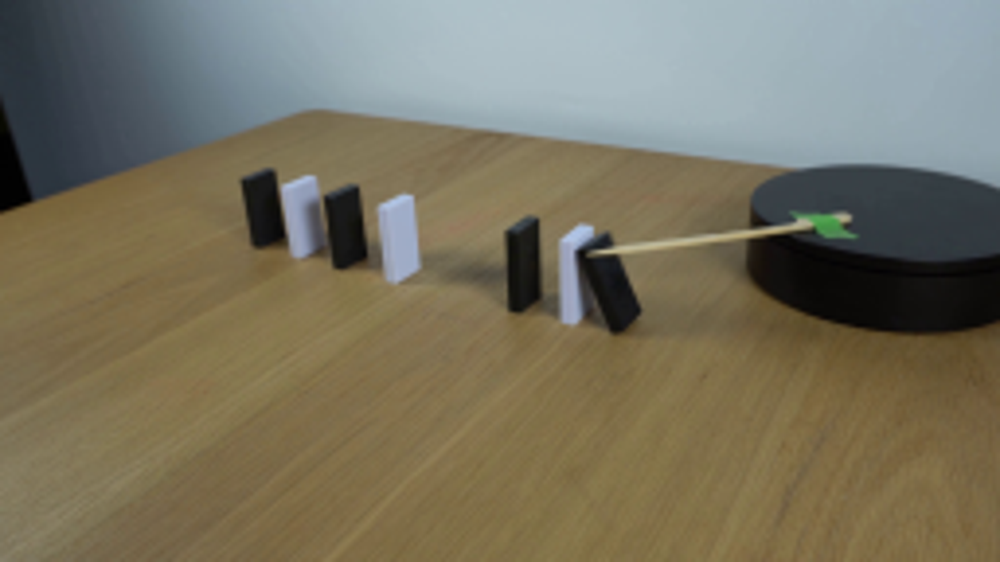
视觉工具实际返回图片 2
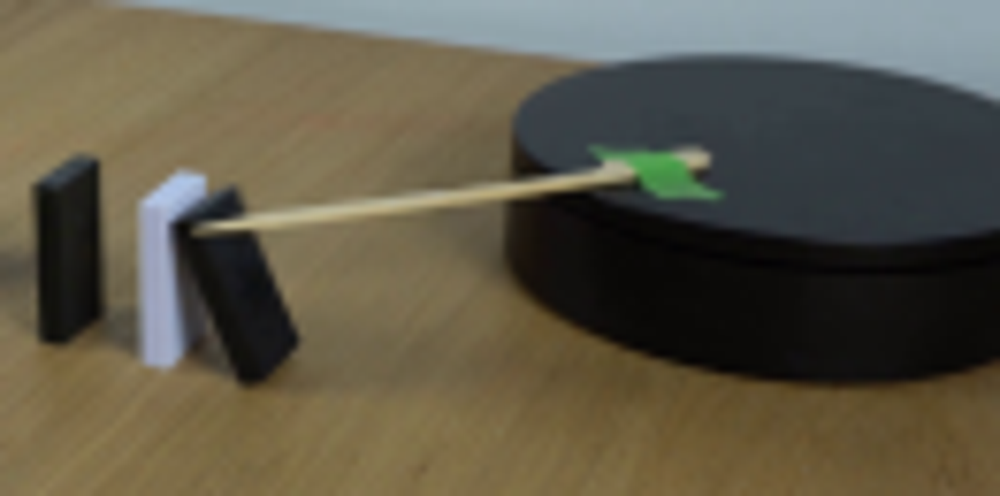
视觉工具实际返回图片 3
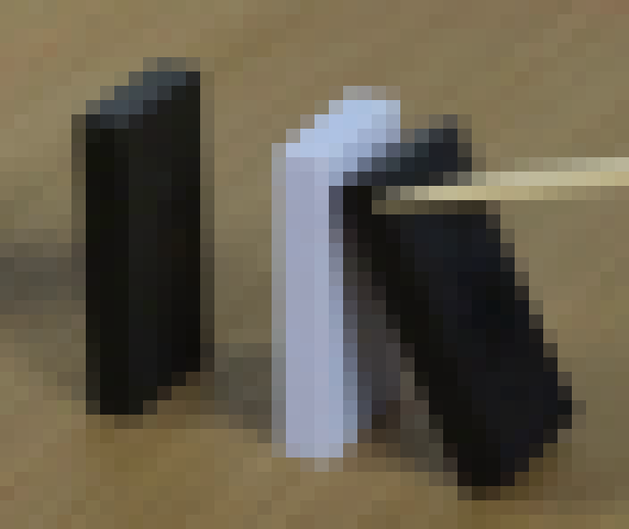
视觉工具实际返回图片 4
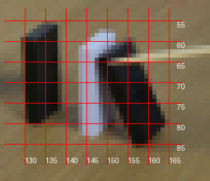
视觉工具实际返回图片 5
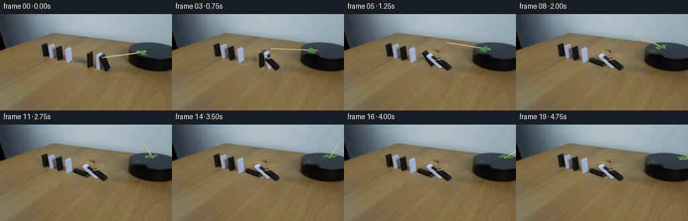
视觉工具实际返回图片 6
视觉工具实际返回图片 7
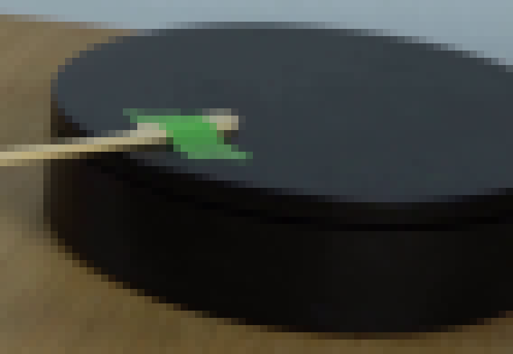
视觉工具实际返回图片 8
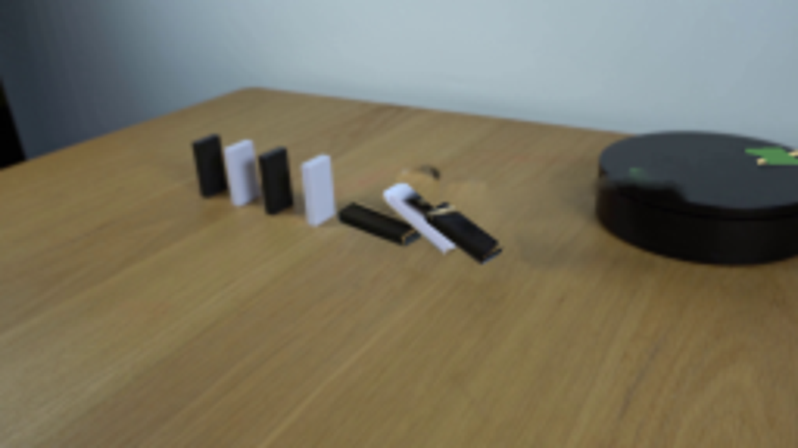
视觉工具实际返回图片 9
视觉工具实际返回图片 10
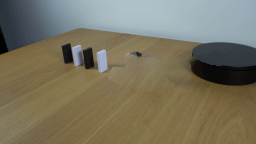
视觉工具实际返回图片 11
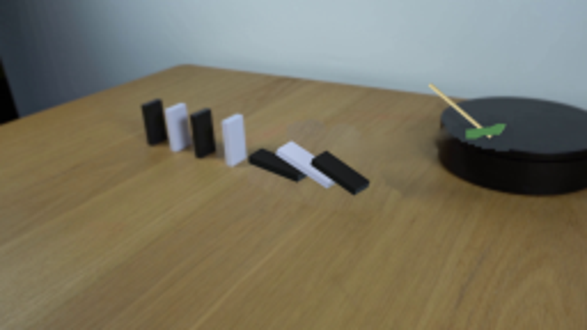
视觉工具实际返回图片 12
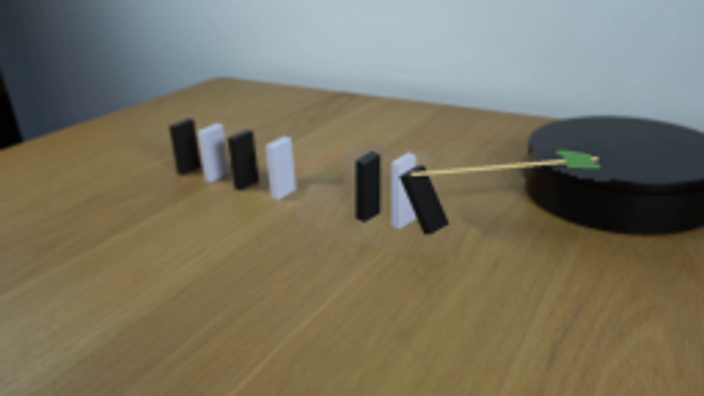
视觉工具实际返回图片 13
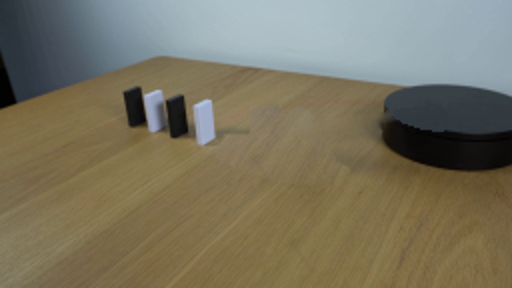
视觉工具实际返回图片 14
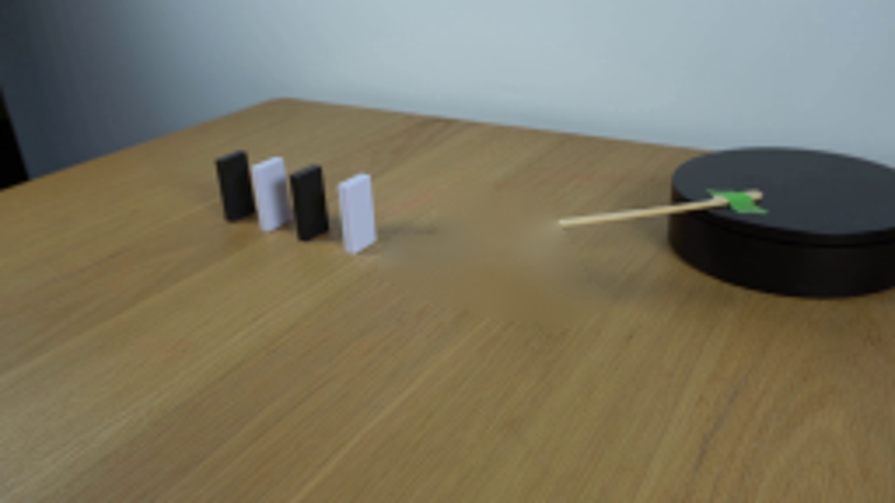
视觉工具实际返回图片 15
视觉工具实际返回图片 16
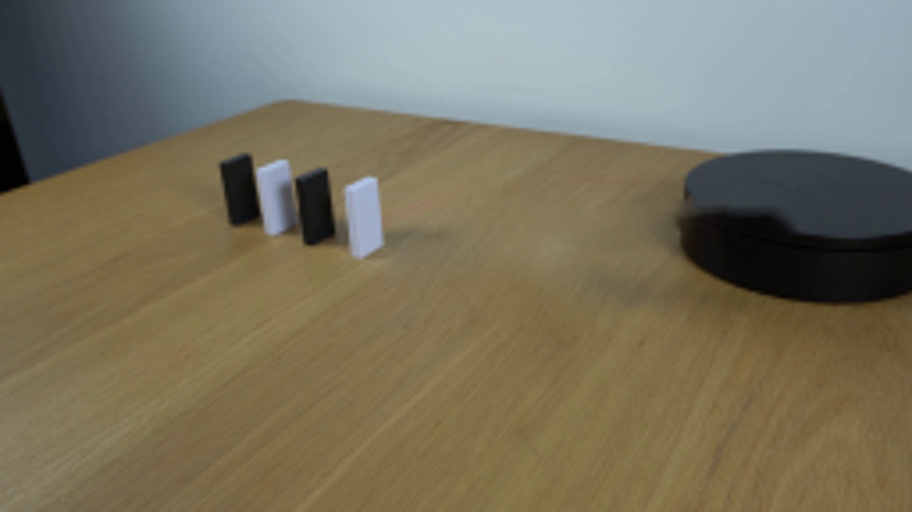
保存候选 5 份；完成命令 18 次；可验证图片返回 16 张。原始 API 响应与完整日志保留在本地。